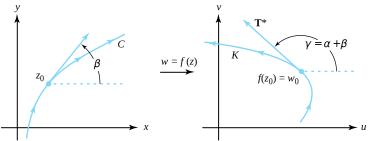
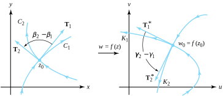
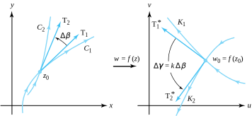

Let \(f\) be an analytic function in the domain \(D\) and let \(z_0\) be a point in \(D\text{.}\) If \(f\,'(z_0) \ne 0\text{,}\) then we can express \(f\) in the form
where \(A=f(z_0)\) and \(B=f\,'(z_0)\text{.}\) Because \(\eta(z) \to 0\) when \(z \to z_0\text{,}\) for points near \(z_0\) the transformation \(w=f(z)\) has an effect much like the linear mapping \(w=S(z)\text{.}\) The effect of the linear mapping \(S\) is a rotation of the plane through the angle \(\alpha =\mathrm{Arg}f\,'(z_0)\text{,}\) followed by a magnification by the factor \(|f\,'(z_0)|\text{,}\) followed by a rigid translation by the vector \(A-Bz_0\text{.}\) Consequently, the mapping \(w=S(z)\) preserves the angles at the point \(z_0\text{.}\) We now show that the mapping \(w=f(z)\) also preserves angles at \(z_0\text{.}\)
Let \(C:z(t) =x(t) +iy(t)\text{,}\)\(-1 \le t \le 1\) denote a smooth curve that passes through the point \(z(0)=z_0\text{.}\) A vector \(\mathbf{T}\) tangent to \(C\) at the point \(z_0\) is given by
The image of \(C\) under the mapping \(w=f(z)\) is the curve \(K\) given by the formula \(K:w(t)=u\big(x(t),
y(t)\big) +iv\big(x(t),y(t)\big)\text{.}\) We can use the chain rule to show that a vector \(\mathbf{T}^*\) tangent to \(K\) at the point \(w_0=f(z_0)\) is given by
where \(\alpha=\mathrm{Arg}\;f\,'(z_0)\text{.}\) Therefore the effect of the transformation \(w=f(z)\) is to rotate the angle of inclination of the tangent vector \(\mathbf{T}\) at \(z_0\) through the angle \(\alpha=\mathrm{Arg}\;f\,'(z_0)\) to obtain the angle of inclination of the tangent vector \(\mathbf{T}^*\)at \(w_0\text{.}\) This situation is illustrated in Figure 9.1.1.

Figure9.1.1.Tangents at the points \(z_0\) and \(w_0\text{,}\) where \(f\ '(z_0) \ne 0\)
A mapping \(w=f(z)\) is said to be angle preserving, or conformal at \(z_0\text{,}\) if it preserves angles between oriented curves in magnitude as well as in orientation. Theorem 9.1.2 shows where a mapping by an analytic function is conformal.
Theorem9.1.2.
Let \(f\) be an analytic function in the domain \(D\text{,}\) and let \(z_0\) be a point in \(D\text{.}\) If \(f\,'(z_0) \ne 0\text{,}\) then \(f\) is conformal at \(z_0\text{.}\)
Proof.
We let \(C_1\) and \(C_2\) be two smooth curves passing through \(z_0\) with tangents given by \(\mathbf{T}_1\) and \(\mathbf{T}_2\text{,}\) respectively. We let \(\beta_1\) and \(\beta_2\) denote the angles of inclination of \(\mathbf{T}_1\) and \(\mathbf{T}_2\text{,}\) respectively.
The image curves \(K_1\) and \(K_2\) that pass through the point \(w_0=f(z_0)\) have tangents denoted \(\mathbf{T}_1^*\) and \(\mathbf{T}_2^*\text{,}\) respectively. From Equation (9.1.2), the angles of inclination \(\gamma_1\) and \(\gamma_2\) of \(\mathbf{T}_1^*\) and \(\mathbf{T}_2^*\) are related to \(\beta_1\) and \(\beta_2\) by the equations
\begin{equation}
\gamma_1=\alpha+\beta_1, \text{ and } \gamma_2 = \alpha+\beta _2\text{,}\tag{9.1.3}
\end{equation}
where \(\alpha=\operatorname*{Arg}f\,'(z_0)\text{.}\) From Equations (9.1.3) we conclude that
The analytic mapping \(w=f(z)\) is conformal at the point \(z_0\text{,}\) where \(f\,'(z_0) \ne 0\) because the angle \(\gamma_2-\gamma_1\) from \(K_1\) to \(K_2\) is the same in magnitude and orientation as the angle \(\beta_2-\beta_1\) from \(C_1\) to \(C_2\text{.}\) This situation is shown in Figure 9.1.3.

Figure9.1.3.Angle preservation when \(f\ '(z_0) \ne 0\)
Example9.1.4.
Show that the mapping \(w=f(z) =\cos z\) is conformal at the points \(z_1=i\text{,}\)\(z_2=1\text{,}\) and \(z_3=\pi+i\text{,}\) and determine the angle of rotation given by \(\alpha=\mathrm{Arg}f\,'(z)\) at the given points.
Solution.
Because \(f\,'(z) =-\sin z\text{,}\) we conclude that the mapping \(w=\cos z\) is conformal at all points except \(z=n\pi\text{,}\) where \(n\) is an integer. Calculation reveals that
Let \(f\) be a nonconstant analytic function. If \(f\,'(z_0)=0\text{,}\) then \(z_0\) is called a critical point of \(f\text{,}\) and the mapping \(w=f(z)\) is not conformal at \(z_0\text{.}\)Theorem 9.1.5 shows what happens at a critical point.
Theorem9.1.5.
Let \(f\) be analytic at \(z_0\text{.}\) If \(f\,'(z_0) = 0,\ldots,f^{(k-1)}(z_0)=0\) and \(f^{(k)}(z_0) \ne 0\text{,}\) then the mapping \(w=f(z)\) magnifies angles at the vertex \(z_0\) by a factor \(k\text{.}\)
Proof.
Since \(f\) is analytic at \(z_0\text{,}\) it has a Taylor series expansion. Because \(a_n=\displaystyle\frac{f^{(n) }(z_0) }{n!}=0\text{,}\) for \(n=1,\ 2,...,\ k-1\text{,}\) the series representation for \(f\) is
where \(g\) is analytic at \(z_0\) and g\((z_0) = a_k \ne 0\text{.}\) Consequently, if \(w=f(z)\) and \(w_0=f(z_0)\text{,}\) then using Equation (9.1.5) we obtain
If \(C\) is a smooth curve that passes through \(z_0\) and \(z \to z_0\) along \(C\text{,}\) then \(w\to w_0\) along the image curve \(K\text{.}\) The angle of inclination of the tangents \(\mathbf{T}\) to \(C\) and \(\mathbf{T}^*\) to \(K\text{,}\) respectively, are then given by the following limits:
where \(\delta = \mathrm{Arg}[g(z_0)] = \mathrm{Arg}(a_k)\text{.}\)
If \(C_1\) and \(C_2\) are two smooth curves that pass through \(z_0\text{,}\) and \(K_1\) and \(K_2\) are their images, then from Equation (9.1.8) it follows that
That is, the angle \(\Delta\gamma\) from \(K_1\) to \(K_2\) is \(k\) times as large as the angle \(\Delta\beta\) from \(C_1\) to \(C_2\text{.}\) Therefore angles at the vertex \(z_0\) are magnified by the factor \(k\text{.}\) This situation is shown in Figure 9.1.6.

Figure9.1.6.The analytic mapping \(w=f(z)\) at point \(z_0\) expands angles by a factor of \(k\) when \(f\ '(z_0)
=0,\ldots,f^{(k-1)}(z_0)=0\text{,}\) and \(f^{(k)}(z_0) \ne 0\)
Example9.1.7.
Show that the mapping \(w=f(z)=z^2\) maps the unit square \(S=\{x+iy: 0\lt x\lt 1, \; 0\lt y\lt 1\}\) onto the region in the upper half-plane \(\mathrm{Im}(w)>0\text{,}\) which lies under the parabolas
\begin{equation*}
u=1-\frac{1}{4}v^2, \text{ and } u=-1+\frac{1}{4}v^2\text{,}
\end{equation*}
The derivative is \(f\,'(z)=2z\text{,}\) and we conclude that the mapping \(w=z^2\) is conformal for all \(z \ne 0\text{.}\) Note that the right angles at the vertices \(z_1=1\text{,}\)\(z_2=1+i\text{,}\) and \(z_3=i\) are mapped onto right angles at the vertices \(w_1=1, \, w_2=2i\text{,}\) and \(w_3=-1\text{,}\) respectively. At the point \(z_0=0\text{,}\) we have \(f\,'(0) =0\) and \(f\,''(0) \ne 0\text{.}\) Hence angles at the vertex \(z_0=0\) are magnified by the factor \(k=2\text{.}\) In particular, the right angle at \(z_0=0\) is mapped onto the straight angle at \(w_0=0\text{.}\)
Another property of a conformal mapping \(w=f(z)\) is obtained by considering the modulus of \(f\,'(z_0)\) . If \(z_1\) is near \(z_0\text{,}\) we can use Equation (9.1.1) and neglect the term \(\eta(z_1)(z_1-z_0)\text{.}\) We then have the approximation
From Equation (9.1.9), the distance \(|w_1-w_0|\) between the images of the points \(z_1\) and \(z_0\) is given approximately by \(|f\,'(z_0)| \, |z_1-z_0|\text{.}\) Therefore we say that the transformation \(w=f(z)\) changes small distances near \(z_0\) by the scale factor\(|f\,'(z_0)|\text{.}\) For example, the scale factor of the transformation \(w=f(z) =z^2\) near the point \(z_0=1+i\) is \(|f\,'(1+i)| = |2(1+i)| = 2\sqrt{2}\text{.}\)
We also need to say a few things about the inverse transformation \(z=g(w)\) of a conformal mapping \(w=f(z)\) near a point \(z_0\) , where \(f\,'(z_0) \ne 0\text{.}\) A complete justification of the following assertions relies on theorems studied in advanced calculus. 1
See, for instance, R. Creighton Buck, Advanced Calculus, 3rd ed. (New York, McGraw-Hill), pp. 358—361, 1978.
We express the mapping \(w=f(z)\) in the coordinate form
\begin{equation}
u = u(x,y), \text{ and } v=v(x,y)\text{.}\tag{9.1.10}
\end{equation}
The mapping in Equations (9.1.10) represents a transformation from the \(xy\) plane into the \(uv\) plane, and the Jacobian determinant,\(J(x,y)\text{,}\) is defined by
The transformation in Equations (9.1.10) has a local inverse, provided \(J(x,y) \ne 0\text{.}\) Expanding Equation (9.1.11) and using the Cauchy-Riemann equations, we obtain
Consequently, Equations (9.1.11) and (9.1.12) imply that a local inverse \(z=g(w)\) exists in a neighborhood of the point \(w_0\text{.}\) The derivative of \(g\) at \(w_0\) is given by the familiar expression
All complex numbers \(z\) except \(z=0\) and \(z=-2\text{.}\)
(d)
\(w=\exp(z^2+1)\text{.}\)
(e)
\(w=\displaystyle\frac{1}{z}\text{.}\)
Solution.
All complex numbers \(z\) except \(z=0\text{.}\)
(f)
\(w=\displaystyle\frac{z+1}{z-1}\text{.}\)
2.
For Exercises 2-5, find the angle of rotation \(\alpha = \mathrm{Arg}\big(f\,'(z)\big)\) and the scale factor \(|f\,'(z)|\) of the mapping \(w=f(z)\) at the indicated points.
(a)
\(w=\displaystyle\frac{1}{z}\) at the points \(1\text{,}\)\(1+i\text{,}\) and \(i\text{.}\)
(b)
\(w=\ln r+i\theta\text{,}\) where \(-\frac{\pi}{2}\lt \theta\lt \frac{3\pi}{2}\) at the points \(1\text{,}\)\(1+i\text{,}\)\(i\text{,}\) and \(-1\text{.}\)
\(w=r^\frac{1}{2}\cos\frac{\theta}{2}+ir^\frac{1}{2}\sin\frac{\theta}{2}\text{,}\) where \(-\pi\lt \theta\lt \pi\text{,}\) at the points \(i, \, 1, \, -i\text{,}\) and \(3+4i\text{.}\)
(d)
\(w=\sin z\) at the points \(\frac{\pi}{2}+i, \, 0\text{,}\) and \(-\frac{\pi}{2}+i\text{.}\)
Consider the mapping \(w=z^2\text{.}\) If \(a\ne 0\) and \(b\ne 0\text{,}\) show that the lines \(x=a\) and \(y=b\) are mapped onto orthogonal parabolas.
(f)
Consider the mapping \(w=z^\frac{1}{2}\text{,}\) where \(z^\frac{1}{2}\) denotes the principal branch of the square root function. If \(a>0\) and \(b>0\text{,}\) show that the lines \(x=a\) and \(y=b\) are mapped onto orthogonal curves.
Solution.
\(|f\,'(a+ib)| = \frac{1}{|2\sqrt{a+ib}|} = \frac{1}{2(a^2+b^2)^\frac{1}{4}} \ne 0\text{,}\) hence \(f(z)\) is conformal at \(z = a+ib\text{.}\) The lines \(z_1(t) = a+(b+t)i\) and, \(z_2(t) = (a+t)+ib\) intersect orthogonally at the point \(z_1(0) = z_2(0) = a + ib\text{,}\) therefore, their image curves will intersect orthogonally at the point \(a + ib\text{.}\)
(g)
Consider the mapping \(w=\exp z\text{.}\) Show that the lines \(x=a\) and \(y=b\) are mapped onto orthogonal curves.
(h)
For \(w=\sin z\) show that the line segment \(-\frac{\pi}{2}\lt x\lt \frac{\pi}{2}, \; y=0\text{,}\) and the vertical line \(x=a\text{,}\) where \(|a| \lt \frac{\pi}{2}\text{,}\) are mapped onto orthogonal curves.
Solution.
\(|f\,'(a+ib)| = |\cos(a+ib)| = \sqrt{\cos^2 a \cosh^2 b + \sin^2 a \sinh^2 b} \ne 0\text{,}\) hence \(f(z)\) is conformal at \(z=a+ib\text{.}\) The lines \(z_1(t)=a+ti\) and \(z_2(t)=a+t\) intersect orthogonally at the point \(z_1(0) = z_2(0) = a\text{.}\) Therefore, their image curves will intersect orthogonally at the point \(\sin(a + ib)\text{.}\)
(i)
Consider the mapping \(w=\mathrm{Log} \, z\text{,}\) where \(\mathrm{Log} \, z\) denotes the principal branch of the logarithm function. Show that the positive \(x\)-axis and the vertical line \(x=1\) are mapped onto orthogonal curves.
(j)
If \(f\) is analytic at \(z_0\) and \(f\,'(z_0) \ne 0\text{,}\) show that the function \(g(z) =\overline{f(z)}\) preserves the magnitude, but reverses the sense, of angles at \(z_0\text{.}\)
Solution.
First show that the mapping \(W = \bar{Z}\) preserves the magnitude, but reverses the sense of angles at \(Z_0\text{.}\) Then consider the mapping \(w=f(z)\) as a composition.
(k)
If \(w=f(z)\) is a mapping, where \(f(z)\) is not analytic, then what behavior would you expect regarding the angles between curves?